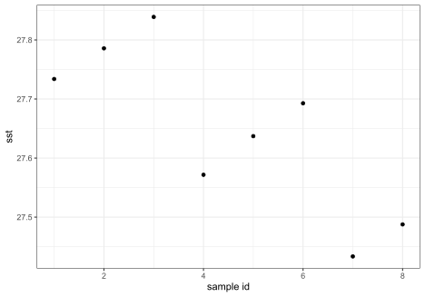

Trong bài viết này mình sẽ chia sẻ sử dụng thư viện stars để xử lý dữ liệu không gian dạng raster với một số thao tác thường dùng như:
library(wdpar) # tải dữ liệu khu bảo tồn
library(tidyverse) # xử lý và trực quan hóa dữ liệu
library(sf) # xử lý dữ liệu không gian dạng vector
library(stars) # xử lý dữ liệu không gian dạng raster
library(tmap) # hiển thị dữ liệu không gian
library(readxl) # đọc dữ liệu Excel
# webdriver::install_phantomjs() # có thể phải cài PhantomJS để chạy các lệnh của wdpar# Dữ liệu khu bảo tồn Việt Nam
vietnam <- wdpa_fetch(
x = "Vietnam", # Tên nước hoặc mã nước theo ISO3 (ví dụ VNM)
wait = TRUE,
download_dir = "." # Thư mục lưu file, "." nghĩa là sẽ lưu ở thư mục làm việc hiện tại (working directory)
)# Trích xuất dữ liệu khu dự trữ sinh quyển Kiên Giang
kiengiang <- vietnam %>% filter(NAME == "Kien Giang")
tmap_mode(mode = "view") # thiết lập chế độ tương tác
tm_shape(kiengiang) +
tm_borders()# Dữ liểu raster
# mình dùng read_ncdf() để đồng nhất với bài viết trước vì file raster ở dạng .nc
oras5 <- read_ncdf("./sosstsst_control_monthly_highres_2D_200001_CONS_v0.1.nc")
# với các dạng file raster khác, ví dụ .tif, thì dùng read_stars()
# oras5 <- read_stars("./sosstsst_control_monthly_highres_2D_200001_CONS_v0.1.nc")
oras5stars object with 3 dimensions and 1 attribute
attribute(s), summary of first 1e+05 cells:
Min. 1st Qu. Median Mean 3rd Qu. Max. NA's
sosstsst [C] -2.039495 -1.878857 -1.844823 -1.365532 -0.6189743 0.1916933 72215
dimension(s):
from to refsys values x/y
x 1 1442 WGS 84 [1442x1021] -180,...,180 [x]
y 1 1021 WGS 84 [1442x1021] -77.01,...,89.95 [y]
time_counter 1 1 POSIXct 2000-01-16 UTC
curvilinear griddữ liệu ORAS5 có 3 chiều (dimensions): kinh độ (x), vĩ độ (y), và thời gian (time_counter); và 1 thuộc tính (attribute): nhiệt độ bề mặt nước biển (sostsst)
vì dữ liệu ORAS5 có phạm vi toàn cầu nên để tiện hiển thị mình sẽ cắt quanh khu vực Việt Nam
# cắt dữ liệu gần khu vực Việt Nam
oras5_sub <- oras5[, 100:200, 500:600, ]
# 100:200 là thứ tự chiều kinh độ x
# 500:600 là thứ tự chiều vĩ độ y
oras5_substars object with 3 dimensions and 1 attribute
attribute(s):
Min. 1st Qu. Median Mean 3rd Qu. Max. NA's
sosstsst [C] 15.52323 25.36546 26.96291 26.31623 27.95051 29.54972 4115
dimension(s):
from to refsys values x/y
x 100 200 WGS 84 [101x101] 97.5,...,122.5 [x]
y 500 600 WGS 84 [101x101] 0.25,...,24.46 [y]
time_counter 1 1 POSIXct 2000-01-16 UTC
curvilinear gridDo dữ liệu oras5 ở dạng curvilinear grid (lưới cong) với hệ tọa độ OGC:CRS84, khác với định dạng grid (lưới phẳng) thông thường ở hệ tọa độ EPSG:4326 (WGS 84) nên cần đổi
# có thể xem hệ tọa độ gốc của file bằng lệnh st_crs()
# st_crs(oras5)
oras5_sub <- st_warp(oras5_sub, # file cần đổi hệ tọa độ
crs = 4326, # hệ tọa độ mới: 4326 là EPGS:4326
cellsize = 0.25 # độ phân giải grid, dữ liệu ORAS5 có độ phân giải khoảng 0.25°
)Bounding box là một khu vực không gian hình chữ nhật được xác định bằng 2 điểm: (1) với kinh độ và vĩ độ nhỏ nhất, và (2) với kinh độ và vĩ độ lớn nhất.
# lấy tọa độ bounding box
bbox <- st_bbox(kiengiang)
bbox xmin ymin xmax ymax
103.778436 9.395532 105.333684 10.501302 # cắt dữ liệu theo bounding box
oras5_bbox <- oras5_sub[bbox]
tm_shape(oras5_bbox) +
tm_raster() +
tm_shape(kiengiang) +
tm_borders()Polygon ở đây là ranh giới của khu dự trữ sinh quyển Kiên Giang
# cắt dữ liệu theo polygon
oras5_kiengiang <- oras5_sub[kiengiang]
tm_shape(oras5_kiengiang) +
tm_raster() +
tm_shape(kiengiang) +
tm_borders()# trích xuất dữ liệu
sst_mean <- aggregate(oras5_sub, # dữ liệu raster
kiengiang, # dữ liệu vector
FUN = mean, # hàm tính toán, ví dụ mean (trung bình)
na.rm = TRUE # tính toán kể cả trong trường hợp có dữ liệu NA
)
# nhóm dữ liệu trích xuất với dữ liệu vector ban đầu theo tọa độ không gian
# dữ liệu trích xuất và dữ liệu vector ở dạng không gian nên
# mình dùng as.data.frame() để chuyển từ dữ liệu dạng không gian (sf) sang dạng bảng (data frame) để việc nhóm được xử lý nhanh hơn
kiengiang_sst <- left_join(as.data.frame(sst_mean), # dữ liệu trích xuất
as.data.frame(kiengiang), # dữ liệu vector
by = join_by(geometry) # tọa độ không gian để nhóm
)
# việc nhóm này sẽ rất có ích khi bạn trích xuất dữ liệu từ vector có nhiều đối tượng
# từ đó bạn có thể biết giá trị tính toán của từng đối tượng
kiengiang_sst geometry time_counter sosstsst WDPAID WDPA_PID PA_DEF NAME ORIG_NAME
1 MULTIPOLYGON (((104.6779 10... 2000-01-16 27.59679 [C] 478284 478284 1 Kien Giang Kiên Giang
DESIG DESIG_ENG DESIG_TYPE IUCN_CAT INT_CRIT MARINE
1 UNESCO-MAB Biosphere Reserve UNESCO-MAB Biosphere Reserve International Not Applicable Not Applicable 1
REP_M_AREA REP_AREA NO_TAKE NO_TK_AREA STATUS STATUS_YR GOV_TYPE OWN_TYPE MANG_AUTH MANG_PLAN
1 0 11881.04 Not Reported 0 Designated 2006 Not Reported Not Reported Not Reported Not Reported
VERIF METADATAID SUB_LOC PARENT_ISO ISO3 SUPP_INFO CONS_OBJ
1 Not Reported 831 Not Reported VNM VNM Not Applicable Not ApplicableỞ ví dụ trên mình tính giá trị nhiệt độ bề mặt nước biển trung bình (mean) trong khu vực khu dự trữ sinh quyển Kiên Giang. Các hàm tính toán cơ bản khác trong R bao gồm:
giá trị trung vị - median
giá trị nhỏ nhất - min
giá trị lớn nhất - max
độ lệch chuẩn (standard deviation) - sd
phương sai (variance) - var
Giả sử chúng ta có 8 điểm lấy mẫu ở file Excel và chúng ta muốn trích xuất giá trị nhiệt độ bề mặt nước biển tại 8 điểm đó
# đọc file Excel
sample <- readxl::read_excel("./sample.xlsx")
# đổi dữ liệu dạng bảng sang sạng không gian (sf feature)
sample_sf <- st_as_sf(sample, coords = c("lon", "lat"), crs = 4326)
# hiển thị dữ liệu
tm_shape(oras5_kiengiang) +
tm_raster() +
tm_shape(kiengiang) +
tm_borders() +
tm_shape(sample_sf) +
tm_dots()# trích xuất dữ liệu
sst_point <- st_extract(oras5_kiengiang, sample_sf)
# nhóm dữ liệu trích xuất với dữ liệu vector ban đầu theo tọa độ không gian
# mình dùng as.data.frame() để chuyển từ dữ liệu dạng không gian (sf) sang dạng bảng (data frame) để việc nhóm được xử lý nhanh hơn
sample_sst <- left_join(as.data.frame(sst_point), # dữ liệu trích xuất
as.data.frame(sample_sf), # dữ liệu vector
by = join_by(geometry) # tọa độ không gian để nhóm
)
# dữ liệu sau khi nhóm ở trên là ở dạng bảng với cột tọa độ 'geometry'
# có thể chuyển lại dữ liệu dạng bảng này thành dạng không giang với lệnh st_as_sf
sample_sst <- st_as_sf(sample_sst, sf_column_name = "geometry")
# hiển thị dữ liệu sau khi trích xuất
ggplot(data = sample_sst, aes(x = id, y = as.numeric(sosstsst))) +
geom_point() +
labs(x = "sample id",
y = "sst")
# lưu dữ liệu raster khu dự trữ sinh quyển Kiên Giang
write_mdim(oras5_kiengiang,
filename = "./oras5_kiengiang_sst_01.2000.nc")
# đọc và hiển thị dữ liệu để kiểm tra xem việc lưu có thành công hay không
oras5_kiengiang <- read_ncdf("./oras5_kiengiang_sst_01.2000.nc")
tm_shape(oras5_kiengiang) +
tm_raster()